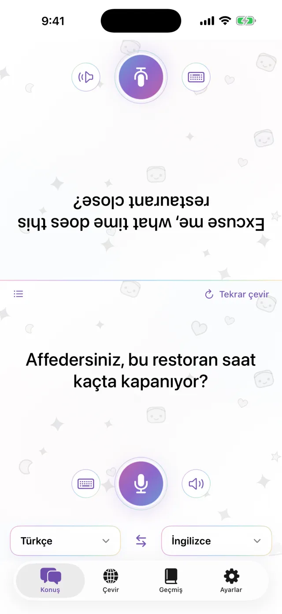
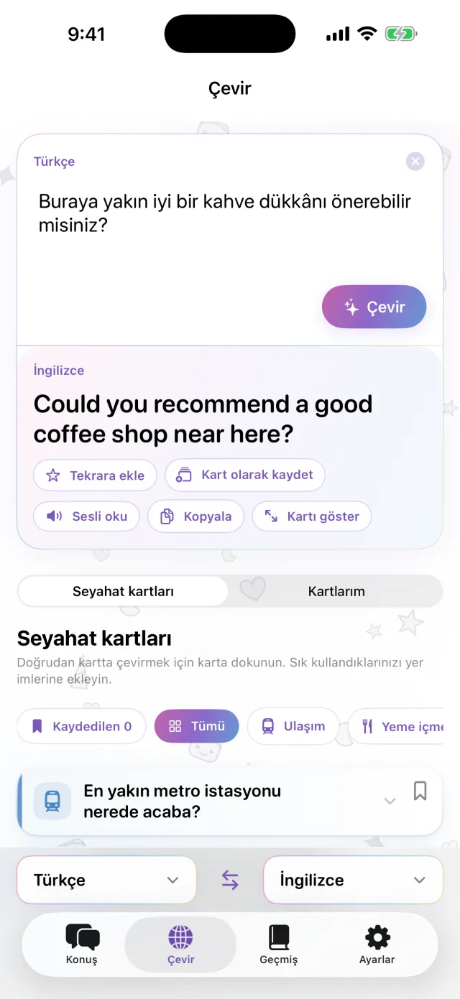
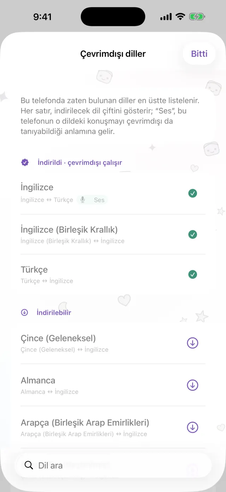
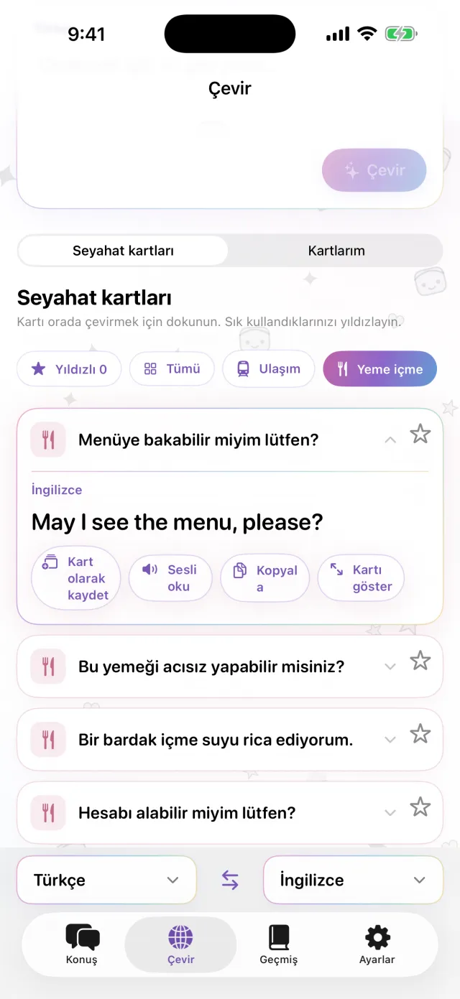
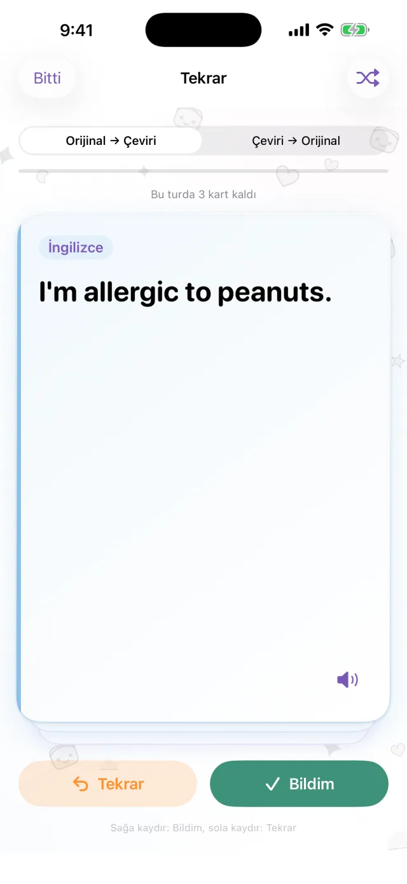

iPhone için çeviri uygulaması
iPhone için çeviri uygulaması
iPhone'unuzu
aranıza koyun.
Bu kadar.
Mikrofona dokunup konuşun. Çeviri, ekranın karşıdaki kişiye bakan yarısında görünür. Karşınızdaki cevap verdiğinde de aynı şekilde çalışır. Dilleri önceden indirirseniz bağlantı olmadan da kullanabilirsiniz.
Çok yakında App Store’da- Yaklaşık 20 dil
- İndirdikten sonra çevrimdışı
- Kayıt gerekmez

Yazarak
Sesli konuşamıyor musunuz? Yazın.
Sessiz bir yerdeyseniz ya da karşınızdaki çok hızlı konuşuyorsa metni yazın. Çeviriyi tam ekran yapıp karşınızdaki kişiye gösterebilirsiniz.
- Çeviriyi kopyalayabilir veya sesli okutabilirsiniz
- İki dili tek dokunuşla değiştirebilirsiniz

Çevrimdışı
Bağlantı yokken de çeviri yapar
Çeviri, konuşma tanıma ve sesli okuma iPhone'unuzda çalışır. Yolculuktan önce ihtiyacınız olan dilleri indirin. Uçakta ya da SIM kart almadan önce de kullanabilirsiniz. Söyledikleriniz bir sunucuya gönderilmez, kayıtlar saklanmaz.

Kalıp cümle kartları
Her seferinde söylediklerinizi kaydedin
Otelinizin adresi, bir gıda alerjisi, aradığınız istasyon. Bunları kart olarak kaydederseniz tekrar yazmanız gerekmez. Karta dokunun, karşınızdakinin diline çevrilsin. Ulaşım, yeme içme, konaklama ve alışveriş için hazır kartlar da var.

Pro
Kaydettiğiniz cümleleri zamanı gelince tekrar edin
Bir cümlenin yıldızına dokunarak tekrar için kaydedin. Hatırlarsanız cümle 1, 3, 7, 14 ve 30 gün sonra karşınıza çıkar. Hatırlamazsanız aynı gün yeniden görürsünüz. Orijinalden çeviriye ya da çeviriden orijinale çalışabilirsiniz. Bu bölüm Pro'ya özeldir.

Şu durumlarda işe yarar
- Küçük bir lokantada sipariş verirken
- Taksi şoförüne adresi söylerken
- Eczanede alerjinizi anlatırken
- Otel resepsiyonuna bavul bırakırken
- Yol sorarken
30 saniyede görün
Bu videoda uçak modu açık.
Temel bilgiler
| Diller | Yaklaşık 20 (Apple'ın cihaz üzerinde çevirdiği diller) |
|---|---|
| Çevrimdışı | Evet, dilleri indirdikten sonra |
| Sesli giriş | Evet. Bazı dillerde yalnızca yazarak giriş var |
| Hesap | Gerekmez |
| Fiyat | Ücretsiz. Pro ek ücretlidir (aşağıya bakın) |
| Gereksinim | iOS 18 veya üstü yüklü iPhone |
- Dilleri indirmek için ilk kullanımda bağlantı gerekir.
- Fiyatlar App Store'da yerel para biriminizle gösterilir.
Ücretsiz ve Pro
Ücretsiz
- Yüz yüze konuşma
- Yazarak çeviri ve tam ekran gösterim
- Çevrimdışı çeviri
- Seyahat kartları ve kendi oluşturacağınız 3 kart
- Küçük banner reklam
Pro
- Reklamsız
- İstediğiniz kadar kart
- Çeviri geçmişi ve aralıklı tekrar
Haftalık, aylık veya tek seferlik satın alma.
Yola çıkmadan önce dilleri indirin.
Çok yakında App Store’daiPhone · iOS 18 veya üzeri · İndirmesi ücretsiz · Her ekran nasıl çalışır